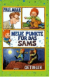

Neue Punkte fur das Sams

Manchmal ist Herr Taschenbier sich nicht sicher, ob es wirklich der beste aller Wunsche war, dass das Sams fur immer bei ihm bleibt. Schlie?lich hat es keine Punkte mehr im Gesicht und kann keine Wunsche mehr erfullen. Es ist nur noch vorlaut und gefra?ig. Und dass Herr Taschenbier sich verliebt hat, passt dem Sams naturlich uberhaupt nicht. Wenn es doch endlich wieder Punkte hatte! Aber das ist diesmal gar nicht so einfach, und schlie?lich kommt alles ganz anders. Mit den Punkten und so und uberhaupt. Jedenfalls gerat Herr Taschenbier in ganz schon verruckte und turbulente Situationen, bis am Ende sein Herzenswunsch doch in Erfullung geht. Und er es mit Hilfe des Sams geschafft hat, einen weiteren, letzten Schritt zur Selbstandigkeit zu tun.